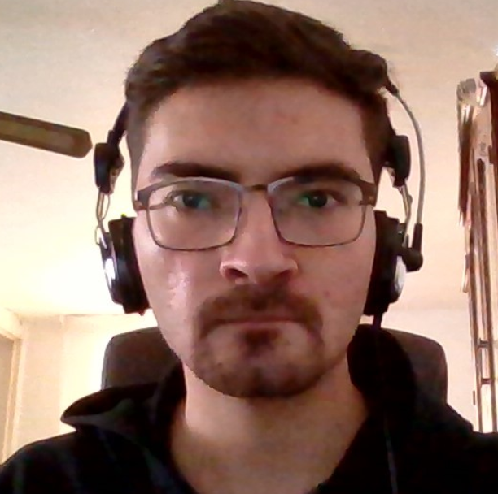

<main>

    <div class ="container">
        
        <div>
          <div class="section">
            <h3>Mi perfil</h3>
          </div>
          
          <div></div>
          <label>Mi nombre es Carlos Garay, nací el 8 de abril del 2002 y soy estudiante de Ingeniería en Sistemas Computacionales.</label><br>
          <label>Algunas de mis metas son conseguir un puesto como desarrollador en el área de QA o de Machine Learning y aprender francés a un nivel B2.  </label><br>
          <label>Entre mis gustos fuera de la programación estan la escultura, los videojuegos y las películas de terror. </label><br>
        </div>

    </div>
</main>